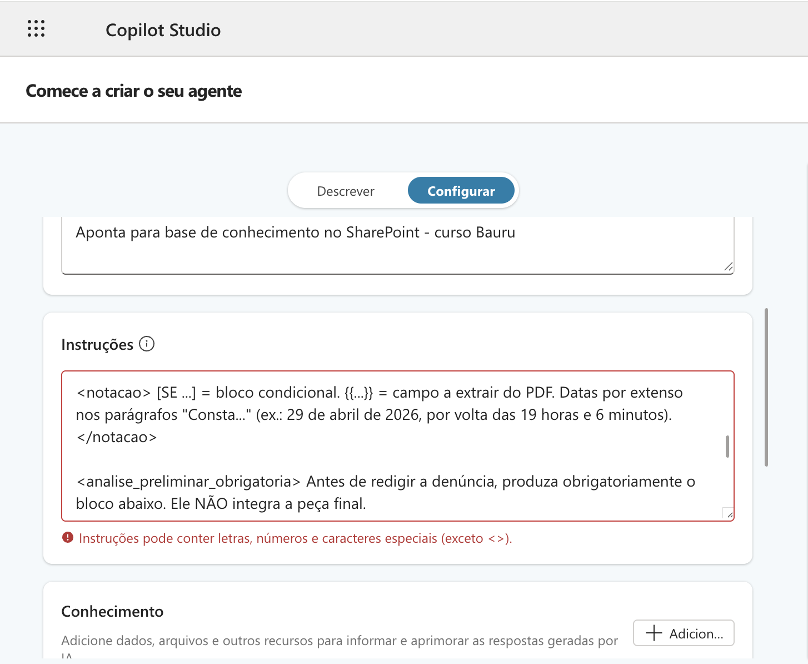

1. Markdown, XML e Placeholders
Por que estruturar prompts?¶
Um bom prompt não se limita ao que se pede à IA, mas também à forma como está organizado. Modelos de linguagem não leem o texto como um bloco único, mas inferem relações entre as partes de um prompt para distinguir instrução, contexto e formato de saída esperado. As técnicas aqui apresentadas contribuem para melhorar as respostas das LLMs em prompts complexos e com documentos anexados.
Estrutura não é estética, é semântica.
Markdown, XML e placeholders delimitam as seções distintas do prompt (instrução, contexto, dado, saída) e reduzem a ambiguidade que faz o modelo errar.
Técnicas¶
Markdown¶
- Cria hierarquia que o modelo interpreta como estrutura semântica. Por estrutura semântica se entende a relação lógica entre as partes: instrução do usuário, dado de apoio (ex. documento) e metadados (ex. nome do arquivo).
- Separa visualmente instrução, contexto e formato de saída (legibilidade para o humano).
Elementos do Markdown
| Marcação | Descrição no Prompt | Exemplo no Prompt |
|---|---|---|
# Título |
Define um título principal, destacando o tema geral do prompt | # Analisador de Inquérito Policial |
## Subtítulo |
Organiza o prompt em seções lógicas | ## Instruções |
### Sub-subtítulo |
Cria níveis adicionais de organização | ### Formato de Saída |
**Negrito** |
Destaca termos-chave para o LLM | **Não inclua opiniões** |
*Itálico* |
Destaca palavras ou frases conforme necessidade | *Importante:* |
***Negrito e Itálico*** |
Combina os dois para máxima ênfase | ***Atente-se para a data!*** |
- Item |
Lista não ordenada para enumerar instruções ou requisitos | - Analise os fatos |
* Item |
Variação da lista não ordenada | * Verifique a tipificação |
1. Item |
Lista ordenada quando a sequência importa | 1. Identifique o investigado |
> |
Bloco de citação para destacar instruções ou exemplos | > Siga este formato: |
``` |
Bloco de código ou texto preformatado | ```python [código]``` |
[Texto](URL) |
Link para referência externa | [Consulta SAJ](https://...) |
--- |
Linha horizontal para separar seções | --- |
XML¶
- Delimita blocos de maneira inequívoca (
<instrucao></instrucao>;<contexto></contexto>). - Evita que o modelo confunda dados com instruções.
- Mitiga a ambiguidade semântica do Markdown em prompts longos.
Exemplo:
<contexto>
Réu preso em flagrante por tráfico de drogas com 500g de cocaína, conforme fls. 12.
Condenado em 1ª instância; defesa apelou (fls. 123).
Razões da apelação a fls. 210/215, com o seguinte conteúdo:
"Pela r. Sentença de fls. 123, o apelante FULANO DE TAL foi condenado ..."
</contexto>
<instrucao>
Liste os pedidos contidos na apelação defensiva fornecida no contexto.
</instrucao>
Interfaces do Copilot podem bloquear < e >
Em alguns contextos, as interfaces do Copilot Studio e do Agent Builder bloqueiam instruções com tags XML. A IA as leria normalmente. Se isso acontecer, estruture os prompts exclusivamente com Markdown (Ex.: # SEÇÃO).

Placeholders¶
- Transformam o prompt em template reutilizável (
{{nome_do_réu}}). - Facilitam a automação com scripts.
Exemplo:
Elabore uma certidão de tempestividade para o recurso interposto por {{NOME_RECORRENTE}},
protocolado em {{DATA_PROTOCOLO}}, considerando o prazo final em {{DATA_LIMITE}}.
Os trechos entre {{ }} são substituídos pelos valores reais antes do envio, manualmente ou por script, permitindo reaproveitar o mesmo prompt em múltiplos casos.
Exemplos de prompts com marcação semântica¶
Os exemplos a seguir combinam Markdown, XML e placeholders.
Manifestação sobre concessão de medidas protetivas de urgência (MPU)¶
O texto dentro de <modelo> é o próprio conteúdo a ser produzido (não uma instrução); por isso a citação jurisprudencial nele aparece entre aspas, em prosa corrida, e não como blockquote (>), normalmente usada para dar ênfase dentro das instruções do prompt.
<contexto>
Você é um Promotor de Justiça. Sua tarefa é redigir uma manifestação
favorável ao pedido de medidas protetivas de urgência, com base no PDF
anexado e no modelo de saída abaixo.
</contexto>
<tarefas>
1. Leia o PDF e identifique:
- Nome da vítima
- Nome do investigado
- Data, horário e local dos fatos
- Fatos que fundamentam o pedido
2. Preencha os placeholders do modelo com as informações extraídas.
3. Retorne **apenas o texto da manifestação**, sem comentários adicionais.
4. Ao final, liste em tópicos separados as informações que não encontrou no documento.
</tarefas>
<instrucoes_de_preenchimento>
- {{VITIMA}}: nome completo da vítima, conforme consta no documento
- {{INVESTIGADO}}: nome completo do investigado
- {{FATOS}}: narrativa dos fatos em até 2 parágrafos — mencione data,
horário, local e condutas atribuídas ao investigado
- Não invente dados. Se uma informação não constar no documento,
use: [informação não localizada]
</instrucoes_de_preenchimento>
<modelo>
MM. Juiz:
Trata-se de representação formulada nos termos do artigo 12, inciso III,
da Lei n. 11.340/08, pela concessão de medidas protetivas de urgência em
favor de {{VITIMA}}.
De acordo com as declarações colhidas, {{FATOS}}.
De fato, os elementos coligidos aos autos sugerem que a ofendida necessita
de proteção em face do investigado {{INVESTIGADO}}.
O depoimento é consistente e verossímil e, como se sabe, no âmbito da violência doméstica, a palavra da mulher possui especial relevância, mormente para a concessão das medidas pleiteadas. "Por certo, os fatos precisam de maiores esclarecimentos, mas dada a natureza cautelar das medidas protetivas, a palavra da vítima é suficiente para a imposição e manutenção delas, para impedir que novos eventos semelhantes aconteçam. Até porque não é possível, na cognição permitida no âmbito do agravo de instrumento, retirar a credibilidade dos relatos da ofendida, matéria que deve ser reservada para eventual ação penal que vier a ser instaurada (TJSP, Ag. Inst. nº 2047751-80.2022.8.26.0000, 11ª. Câmara Criminal, Rel. Xavier de Souza, j. 13/04/2022)".
Assim, presentes os requisitos legais e as circunstâncias delineadoras de
violência doméstica, manifesto-me favoravelmente ao pedido.
</modelo>
Prompt para "multidocumentos" (uso em API)¶
Observe o uso de metadados para identificar a fonte da informação (ancoragem).
<documents>
<document index="1">
<source>annual_report_2023.pdf</source>
<document_content>
{{ANNUAL_REPORT}}
</document_content>
</document>
<document index="2">
<source>competitor_analysis_q2.xlsx</source>
<document_content>
{{COMPETITOR_ANALYSIS}}
</document_content>
</document>
</documents>
Analise o relatório anual e a análise dos concorrentes. Identifique vantagens estratégicas e recomende áreas de foco para o terceiro trimestre (Q3).
Dica PRO: injetando conteúdo de documentos com o uso de API
A tag <source> funciona como um metadado que identifica a origem do arquivo para a IA, enquanto o texto entre chaves {{ANNUAL_REPORT}} é um placeholder (variável) que um script substitui pelo conteúdo real do PDF antes de enviar o prompt final, permitindo automatizar a análise de documentos de forma organizada e reutilizável.